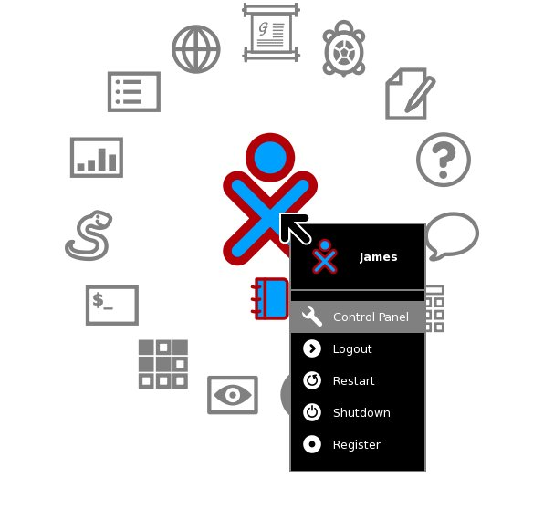
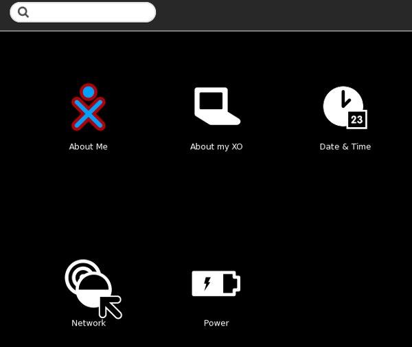
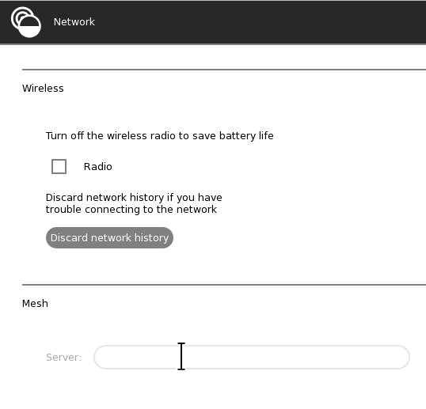
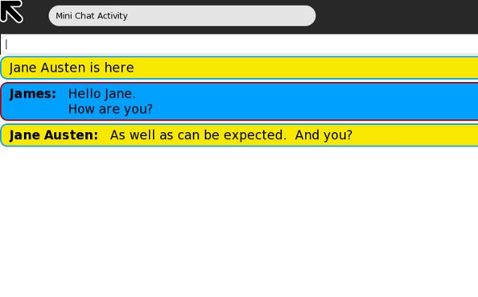
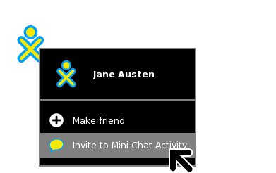
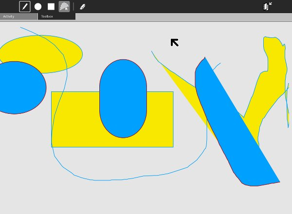
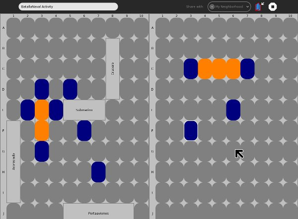

Making Shared Activities
Introduction
One of the distinctive features of Sugar is how many Activities support being used by more than one person at a time. More and more computers are being used as a communications medium. The latest computer games don't just pit the player against the computer; they create a world where players compete against each other. Websites like Facebook are increasingly popular because they allow people to interact with each other and even play games. It is only natural that educational software should support these kinds of interactions.
I have a niece that is an enthusiastic member of the Club Penguin website created by Disney. When I gave her Sugar on a Stick Blueberry as an extra Christmas gift I demonstrated the Neighborhood view and told her that Sugar would make her whole computer like Club Penguin. She thought that was a pretty cool idea. I felt pretty cool saying it.
Running Sugar As More Than One User
Before you write any piece of software you need to give some thought to how you will test it. In the case of a shared Activity you might think you'd need more than one computer available to do testing, but those who designed Sugar did give some thought to testing shared Activities and gave us ways to test them using only one computer. These methods have been evolving so there are slight variations in how you test depending on the version of Sugar you're using. The first thing you have to know is how to run multiple copies of Sugar as different users.
Fedora 10 (Sugar .82)
In Sugar .82 there is a handy way to run multiple copies of sugar-emulator and have each copy be a different user, without having to be logged into your Linux box as more than one user. On the command line for each additional user you want add a SUGAR_PROFILE environment variable like this:
SUGAR_PROFILE=austen sugar-emulator
When you do this sugar-emulator will create a directory named austen under ~/.sugar to store profile information, etc. You will be prompted to enter a name and select colors for your icon. Every time you launch using the SUGAR_PROFILE of austen you will be this user. If you launch with no SUGAR_PROFILE you will be the regular user you set up before.
Fedora 11 (Sugar .84)
As handy as using SUGAR_PROFILE is the developers of Sugar decided it had limitations so with version .84 and later it no longer works. With .84 and later you need to create a second Linux user and run your sugar-emulators as two separate Linux users. In the GNOME environment there is an option Users and Groups in the Administration submenu of the System menu which will enable you to set up a second user. Before it comes up it will prompt you for the administrative password you created when you first set up Linux.
Creating the second user is simple enough, but how do you go about being logged in as two different users at the same time? It's actually pretty simple. You need to open a terminal window and type this:
ssh -XY jausten@localhost
where "jausten" is the userid of the second user. You will be asked to verify that the computer at "localhost" should be trusted. Since "localhost" just means that you are using the network to connect to another account on the same computer it is safe to answer "yes". Then you will be prompted to enter her password, and from then on everything you do in that terminal window will be done as her. You can launch sugar-emulator from that terminal and the first time you do it will prompt you for a name and icon colors.
sugar-jhbuild
With sugar-jhbuild (the latest version of Sugar) things are a bit different again. You will use the method of logging in as multiple Linux users like you did in .84, but you won't get prompted for a name. Instead the name associated with the userid you're running under will be the name you'll use in Sugar. You won't be able to change it, but you will be able to choose your icon colors as before.
You will need a separate install of sugar-jhbuild for each user. These additional installs will go quickly because you installed all the dependencies the first time.
Connecting To Other Users
Sugar uses software called Telepathy that implements an instant messaging protocol called XMPP (Extended Messaging and Presence Protocol). This protocol used to be called Jabber. In essence Telepathy lets you put an instant messaging client in your Activity. You can use this to send messages from user to user, execute methods remotely, and do file transfers.
There are actually two ways that Sugar users can join together in a network:
Salut
If two computer users are connected to the same segment of a network they should be able to find each other and share Activities. If you have a home network where everyone uses the same router you can share with others on that network. This is sometimes called Link-Local XMPP. The Telepathy software that makes this possible is called Salut.
The XO laptop has special hardware and software to support Mesh Networking, where XO laptops that are near each other can automatically start networking with each other without needing a router. As far as Sugar is concerned, it doesn't matter what kind of network you have. Wired or wireless, Mesh or not, they all work.
Jabber Server
The other way to connect to other users is by going through a Jabber Server. The advantage of using a Jabber server is you can contact and share Activities with people outside your own network. These people might even be on the other side of the world. Jabber allows Activities in different networks to connect when both networks are protected by firewalls. The part of Telepathy that works with a Jabber server is called Gabble.
Generally you should use Salut for testing if at all possible. This simplifies testing and doesn't use up resources on a Jabber server.
It does not matter if your Activity connects to others using Gabble or Salut. In fact, the Activity has no idea which it is using. Those details are hidden from the Activity by Telepathy. Any Activity that works with Salut will work with Gabble and vice versa.
To set up sugar-emulator to use Salut go to the Sugar control panel:

In Sugar .82 this menu option is Control Panel. In later versions it is My Settings.

Click on the Network icon.

The Server field in this screen should be empty to use Salut. You can use the backspace key to remove any entry there.
You will need to follow these steps for every Sugar user that will take part in your test.
If for some reason you wish to test your Activity using a Jabber server the OLPC Wiki maintains a list of publicly available servers at http://wiki.laptop.org/go/Community_Jabber_Servers.
Once you have either Salut or a Jabber server set up in both instances of Sugar that you are running you should look at the Neighborhood view of both to see if they can detect each other, and perhaps try out the Chat Activity between the two. If you have that working you're ready to try programming a shared Activity.
The MiniChat Activity
Just as we took the Read Etexts Activity and stripped it down to the basics we're going to do the same to the Chat Activity to create a new Activity called MiniChat. The real Chat Activity has a number of features that we don't need to demonstrate shared Activity messaging:
- It has the ability to load its source code into Pippy for viewing. This was a feature that all Activities on the XO were supposed to have, but Chat is one of the few that implemented it. Personally, if I want to see an Activity's code I prefer to go to git.sugarlabs.org where I can see old versions of the code as well as the latest.
- Chat can connect one to one with a conventional XMPP client. This may be useful for Chat but would not be needed or desirable for most shared Activities.
- If you include a URL in a Chat message the user interface enables you to click on the URL and open it with the Browse Activity. Pretty cool, but not needed to demonstrate how to make a shared Activity.
- The chat session is stored in the Journal. When you resume a Chat entry from the Journal it restores the messages from your previous chat session into the user interface. We already know how to save things to the Journal and restore things from the Journal, so MiniChat won't do this.
The resulting code is about half as long as the original. I made a few other changes too:
- The text entry field is above the chat messages, instead of below. This makes it easier to do partial screenshots of the Activity in action.
- I removed the new style toolbar and added an old style toolbar, so I could test it in Fedora 10 and 11 which don't support the new toolbars.
- I took the class TextChannelWrapper and put it in its own file. I did this because the class looked like it might be useful for other projects.
The code and all supporting files for MiniChat are in the MiniChat directory of the Git repository. You'll need to run
./setup.py dev
on the project to make it ready to test. The activity.info looks like this:
[Activity] name = Mini Chat service_name = net.flossmanuals.MiniChat icon = chat exec = sugar-activity minichat.MiniChat show_launcher = yes activity_version = 1 license = GPLv2+
Here is the code for textchannel.py:
import logging
from telepathy.client import Connection, Channel
from telepathy.interfaces import (
CHANNEL_INTERFACE, CHANNEL_INTERFACE_GROUP, CHANNEL_TYPE_TEXT,
CONN_INTERFACE_ALIASING)
from telepathy.constants import (
CHANNEL_GROUP_FLAG_CHANNEL_SPECIFIC_HANDLES,
CHANNEL_TEXT_MESSAGE_TYPE_NORMAL)
class TextChannelWrapper(object):
"""Wrap a telepathy Text Channel to make usage simpler."""
def __init__(self, text_chan, conn):
"""Connect to the text channel"""
self._activity_cb = None
self._activity_close_cb = None
self._text_chan = text_chan
self._conn = conn
self._logger = logging.getLogger(
'minichat-activity.TextChannelWrapper')
self._signal_matches = []
m = self._text_chan[CHANNEL_INTERFACE].connect_to_signal(
'Closed', self._closed_cb)
self._signal_matches.append(m)
def send(self, text):
"""Send text over the Telepathy text channel."""
# XXX Implement CHANNEL_TEXT_MESSAGE_TYPE_ACTION
if self._text_chan is not None:
self._text_chan[CHANNEL_TYPE_TEXT].Send(
CHANNEL_TEXT_MESSAGE_TYPE_NORMAL, text)
def close(self):
"""Close the text channel."""
self._logger.debug('Closing text channel')
try:
self._text_chan[CHANNEL_INTERFACE].Close()
except:
self._logger.debug('Channel disappeared!')
self._closed_cb()
def _closed_cb(self):
"""Clean up text channel."""
self._logger.debug('Text channel closed.')
for match in self._signal_matches:
match.remove()
self._signal_matches = []
self._text_chan = None
if self._activity_close_cb is not None:
self._activity_close_cb()
def set_received_callback(self, callback):
"""Connect the function callback to the signal.
callback -- callback function taking buddy and text args
"""
if self._text_chan is None:
return
self._activity_cb = callback
m = self._text_chan[CHANNEL_TYPE_TEXT].connect_to_signal('Received',
self._received_cb)
self._signal_matches.append(m)
def handle_pending_messages(self):
"""Get pending messages and show them as received."""
for id, timestamp, sender, type, flags, text in \
self._text_chan[
CHANNEL_TYPE_TEXT].ListPendingMessages(False):
self._received_cb(id, timestamp, sender, type, flags, text)
def _received_cb(self, id, timestamp, sender, type, flags, text):
"""Handle received text from the text channel.
Converts sender to a Buddy.
Calls self._activity_cb which is a callback to the activity.
"""
if self._activity_cb:
buddy = self._get_buddy(sender)
self._activity_cb(buddy, text)
self._text_chan[
CHANNEL_TYPE_TEXT].AcknowledgePendingMessages([id])
else:
self._logger.debug('Throwing received message on the floor'
' since there is no callback connected. See '
'set_received_callback')
def set_closed_callback(self, callback):
"""Connect a callback for when the text channel is closed.
callback -- callback function taking no args
"""
self._activity_close_cb = callback
def _get_buddy(self, cs_handle):
"""Get a Buddy from a (possibly channel-specific) handle."""
# XXX This will be made redundant once Presence Service
# provides buddy resolution
from sugar.presence import presenceservice
# Get the Presence Service
pservice = presenceservice.get_instance()
# Get the Telepathy Connection
tp_name, tp_path = pservice.get_preferred_connection()
conn = Connection(tp_name, tp_path)
group = self._text_chan[CHANNEL_INTERFACE_GROUP]
my_csh = group.GetSelfHandle()
if my_csh == cs_handle:
handle = conn.GetSelfHandle()
elif group.GetGroupFlags() & \
CHANNEL_GROUP_FLAG_CHANNEL_SPECIFIC_HANDLES:
handle = group.GetHandleOwners([cs_handle])[0]
else:
handle = cs_handle
# XXX: deal with failure to get the handle owner
assert handle != 0
return pservice.get_buddy_by_telepathy_handle(
tp_name, tp_path, handle)
Here is the code for minichat.py:
from gettext import gettext as _
import hippo
import gtk
import pango
import logging
from sugar.activity.activity import Activity, ActivityToolbox, SCOPE_PRIVATE
from sugar.graphics.alert import NotifyAlert
from sugar.graphics.style import (Color, COLOR_BLACK, COLOR_WHITE,
COLOR_BUTTON_GREY, FONT_BOLD, FONT_NORMAL)
from sugar.graphics.roundbox import CanvasRoundBox
from sugar.graphics.xocolor import XoColor
from sugar.graphics.palette import Palette, CanvasInvoker
from textchannel import TextChannelWrapper
logger = logging.getLogger('minichat-activity')
class MiniChat(Activity):
def __init__(self, handle):
Activity.__init__(self, handle)
root = self.make_root()
self.set_canvas(root)
root.show_all()
self.entry.grab_focus()
toolbox = ActivityToolbox(self)
activity_toolbar = toolbox.get_activity_toolbar()
activity_toolbar.keep.props.visible = False
self.set_toolbox(toolbox)
toolbox.show()
self.owner = self._pservice.get_owner()
# Auto vs manual scrolling:
self._scroll_auto = True
self._scroll_value = 0.0
# Track last message, to combine several messages:
self._last_msg = None
self._last_msg_sender = None
self.text_channel = None
if self._shared_activity:
# we are joining the activity
self.connect('joined', self._joined_cb)
if self.get_shared():
# we have already joined
self._joined_cb()
else:
# we are creating the activity
if not self.metadata or self.metadata.get('share-scope',
SCOPE_PRIVATE) == SCOPE_PRIVATE:
# if we are in private session
self._alert(_('Off-line'), _('Share, or invite someone.'))
self.connect('shared', self._shared_cb)
def _shared_cb(self, activity):
logger.debug('Chat was shared')
self._setup()
def _setup(self):
self.text_channel = TextChannelWrapper(
self._shared_activity.telepathy_text_chan,
self._shared_activity.telepathy_conn)
self.text_channel.set_received_callback(self._received_cb)
self._alert(_('On-line'), _('Connected'))
self._shared_activity.connect('buddy-joined', self._buddy_joined_cb)
self._shared_activity.connect('buddy-left', self._buddy_left_cb)
self.entry.set_sensitive(True)
self.entry.grab_focus()
def _joined_cb(self, activity):
"""Joined a shared activity."""
if not self._shared_activity:
return
logger.debug('Joined a shared chat')
for buddy in self._shared_activity.get_joined_buddies():
self._buddy_already_exists(buddy)
self._setup()
def _received_cb(self, buddy, text):
"""Show message that was received."""
if buddy:
nick = buddy.props.nick
else:
nick = '???'
logger.debug('Received message from %s: %s', nick, text)
self.add_text(buddy, text)
def _alert(self, title, text=None):
alert = NotifyAlert(timeout=5)
alert.props.title = title
alert.props.msg = text
self.add_alert(alert)
alert.connect('response', self._alert_cancel_cb)
alert.show()
def _alert_cancel_cb(self, alert, response_id):
self.remove_alert(alert)
def _buddy_joined_cb (self, activity, buddy):
"""Show a buddy who joined"""
if buddy == self.owner:
return
if buddy:
nick = buddy.props.nick
else:
nick = '???'
self.add_text(buddy, buddy.props.nick+' '+_('joined the chat'),
status_message=True)
def _buddy_left_cb (self, activity, buddy):
"""Show a buddy who joined"""
if buddy == self.owner:
return
if buddy:
nick = buddy.props.nick
else:
nick = '???'
self.add_text(buddy, buddy.props.nick+' '+_('left the chat'),
status_message=True)
def _buddy_already_exists(self, buddy):
"""Show a buddy already in the chat."""
if buddy == self.owner:
return
if buddy:
nick = buddy.props.nick
else:
nick = '???'
self.add_text(buddy, buddy.props.nick+' '+_('is here'),
status_message=True)
def make_root(self):
conversation = hippo.CanvasBox(
spacing=0,
background_color=COLOR_WHITE.get_int())
self.conversation = conversation
entry = gtk.Entry()
entry.modify_bg(gtk.STATE_INSENSITIVE,
COLOR_WHITE.get_gdk_color())
entry.modify_base(gtk.STATE_INSENSITIVE,
COLOR_WHITE.get_gdk_color())
entry.set_sensitive(False)
entry.connect('activate', self.entry_activate_cb)
self.entry = entry
hbox = gtk.HBox()
hbox.add(entry)
sw = hippo.CanvasScrollbars()
sw.set_policy(hippo.ORIENTATION_HORIZONTAL, hippo.SCROLLBAR_NEVER)
sw.set_root(conversation)
self.scrolled_window = sw
vadj = self.scrolled_window.props.widget.get_vadjustment()
vadj.connect('changed', self.rescroll)
vadj.connect('value-changed', self.scroll_value_changed_cb)
canvas = hippo.Canvas()
canvas.set_root(sw)
box = gtk.VBox(homogeneous=False)
box.pack_start(hbox, expand=False)
box.pack_start(canvas)
return box
def rescroll(self, adj, scroll=None):
"""Scroll the chat window to the bottom"""
if self._scroll_auto:
adj.set_value(adj.upper-adj.page_size)
self._scroll_value = adj.get_value()
def scroll_value_changed_cb(self, adj, scroll=None):
"""Turn auto scrolling on or off.
If the user scrolled up, turn it off.
If the user scrolled to the bottom, turn it back on.
"""
if adj.get_value() < self._scroll_value:
self._scroll_auto = False
elif adj.get_value() == adj.upper-adj.page_size:
self._scroll_auto = True
def add_text(self, buddy, text, status_message=False):
"""Display text on screen, with name and colors.
buddy -- buddy object
text -- string, what the buddy said
status_message -- boolean
False: show what buddy said
True: show what buddy did
hippo layout:
.------------- rb ---------------.
| +name_vbox+ +----msg_vbox----+ |
| | | | | |
| | nick: | | +--msg_hbox--+ | |
| | | | | text | | |
| +---------+ | +------------+ | |
| | | |
| | +--msg_hbox--+ | |
| | | text | | |
| | +------------+ | |
| +----------------+ |
`--------------------------------'
"""
if buddy:
nick = buddy.props.nick
color = buddy.props.color
try:
color_stroke_html, color_fill_html = color.split(',')
except ValueError:
color_stroke_html, color_fill_html = ('#000000', '#888888')
# Select text color based on fill color:
color_fill_rgba = Color(color_fill_html).get_rgba()
color_fill_gray = (color_fill_rgba[0] + color_fill_rgba[1] +
color_fill_rgba[2])/3
color_stroke = Color(color_stroke_html).get_int()
color_fill = Color(color_fill_html).get_int()
if color_fill_gray < 0.5:
text_color = COLOR_WHITE.get_int()
else:
text_color = COLOR_BLACK.get_int()
else:
nick = '???' # XXX: should be '' but leave for debugging
color_stroke = COLOR_BLACK.get_int()
color_fill = COLOR_WHITE.get_int()
text_color = COLOR_BLACK.get_int()
color = '#000000,#FFFFFF'
# Check for Right-To-Left languages:
if pango.find_base_dir(nick, -1) == pango.DIRECTION_RTL:
lang_rtl = True
else:
lang_rtl = False
# Check if new message box or add text to previous:
new_msg = True
if self._last_msg_sender:
if not status_message:
if buddy == self._last_msg_sender:
# Add text to previous message
new_msg = False
if not new_msg:
rb = self._last_msg
msg_vbox = rb.get_children()[1]
msg_hbox = hippo.CanvasBox(
orientation=hippo.ORIENTATION_HORIZONTAL)
msg_vbox.append(msg_hbox)
else:
rb = CanvasRoundBox(background_color=color_fill,
border_color=color_stroke,
padding=4)
rb.props.border_color = color_stroke # Bug #3742
self._last_msg = rb
self._last_msg_sender = buddy
if not status_message:
name = hippo.CanvasText(text=nick+': ',
color=text_color,
font_desc=FONT_BOLD.get_pango_desc())
name_vbox = hippo.CanvasBox(
orientation=hippo.ORIENTATION_VERTICAL)
name_vbox.append(name)
rb.append(name_vbox)
msg_vbox = hippo.CanvasBox(
orientation=hippo.ORIENTATION_VERTICAL)
rb.append(msg_vbox)
msg_hbox = hippo.CanvasBox(
orientation=hippo.ORIENTATION_HORIZONTAL)
msg_vbox.append(msg_hbox)
if status_message:
self._last_msg_sender = None
if text:
message = hippo.CanvasText(
text=text,
size_mode=hippo.CANVAS_SIZE_WRAP_WORD,
color=text_color,
font_desc=FONT_NORMAL.get_pango_desc(),
xalign=hippo.ALIGNMENT_START)
msg_hbox.append(message)
# Order of boxes for RTL languages:
if lang_rtl:
msg_hbox.reverse()
if new_msg:
rb.reverse()
if new_msg:
box = hippo.CanvasBox(padding=2)
box.append(rb)
self.conversation.append(box)
def entry_activate_cb(self, entry):
text = entry.props.text
logger.debug('Entry: %s' % text)
if text:
self.add_text(self.owner, text)
entry.props.text = ''
if self.text_channel:
self.text_channel.send(text)
else:
logger.debug('Tried to send message but text channel '
'not connected.')
And this is what the Activity looks like in action:

Try launching more than one copy of sugar-emulator, with this Activity installed in each. If you're using Fedora 10 and SUGAR_PROFILE the Activity does not need to be installed more than once, but if you're using a later version of Sugar that requires separate Linux userids for each instance you'll need to maintain separate copies of the code for each user. In your own projects using a central Git repository at git.sugarlabs.org will make this easy. You just do a git push to copy your changes to the central repository and a git pull to copy them to your second userid. The second userid can use the public URL. There's no need to set up SSH for any user other than the primary one.
You may have read somewhere that you can install an Activity on one machine and share that Activity with another that does not have the activity installed. In such a case the second machine would get a copy of the Activity from the first machine and install it automatically. You may have also read that if two users of a shared Activity have different versions of that Activity then the one who has the newer version will automatically update the older. Neither statement is true now or is likely to be true in the near future. These ideas are discussed on the mailing lists from time to time but there are practical difficulties to overcome before anything like that could work, mostly having to do with security. For now both users of a shared Activity must have the Activity installed. On the other hand, depending on how the Activity is written two different versions of an Activity may be able to communicate with one another. If the messages they exchange are in the same format there should be no problem.
Once you have both instances of sugar-emulator going you can launch MiniChat on one and invite the second user to Join the Chat session. You can do both with the Neighborhood panes of each instance. Making the invitation looks like this:

Accepting it looks like this:
After you've played with MiniChat for awhile come back and we'll discuss the secrets of using Telepathy to create a shared Activity.
Know who Your Buddies Are
XMPP, as we said before, is the Extended Messaging and Presence Protocol. Presence is just what it sounds like; it handles letting you know who is available to share your Activity, as well as what other Activities are available to share. There are two ways to share your Activity. The first one is when you change the Share with: pulldown on the standard toolbar so it reads My Neighborhood instead of Private. That means anyone on the network can share your Activity. The other way to share is to go to the Neighborhood view and invite someone specific to share. The person getting the invitation has no idea of the invitation was specifically for him or broadcast to the Neighborhood. The technical term for persons sharing your Activity is Buddies. The place where Buddies meet and collaborate is called an MUC or Multi User Chatroom.
The code used by our Activity for inviting Buddies and joining the Activity as a Buddy is in the __init__() method:
if self._shared_activity:
# we are joining the activity
self.connect('joined', self._joined_cb)
if self.get_shared():
# we have already joined
self._joined_cb()
else:
# we are creating the activity
if not self.metadata or self.metadata.get('share-scope',
SCOPE_PRIVATE) == SCOPE_PRIVATE:
# if we are in private session
self._alert(_('Off-line'), _('Share, or invite someone.'))
self.connect('shared', self._shared_cb)
def _shared_cb(self, activity):
logger.debug('Chat was shared')
self._setup()
def _joined_cb(self, activity):
"""Joined a shared activity."""
if not self._shared_activity:
return
logger.debug('Joined a shared chat')
for buddy in self._shared_activity.get_joined_buddies():
self._buddy_already_exists(buddy)
self._setup()
def _setup(self):
self.text_channel = TextChannelWrapper(
self._shared_activity.telepathy_text_chan,
self._shared_activity.telepathy_conn)
self.text_channel.set_received_callback(self._received_cb)
self._alert(_('On-line'), _('Connected'))
self._shared_activity.connect('buddy-joined', self._buddy_joined_cb)
self._shared_activity.connect('buddy-left', self._buddy_left_cb)
self.entry.set_sensitive(True)
self.entry.grab_focus()
There are two ways to launch an Activity: as the first user of an Activity or by joining an existing Activity. The first line above in bold determines whether we are joining or are the first user of the Activity. If so we ask for the _joined_cb() method to be run when the 'joined' event occurs. This method gets a buddy list from the _shared_activity object and creates messages in the user interface informing the user that these buddies are already in the chat room. Then it runs the _setup() method.
If we are not joining an existing Activity then we check to see if we are currently sharing the Activity with anyone. If we aren't we pop up a message telling the user to invite someone to chat. We also request that when the 'shared' even happens the _shared_cb() method should run. This method just runs the _setup() method.
The _setup() method creates a TextChannelWrapper object using the code in textchannel.py. It also tells the _shared_activity object that it wants some callback methods run when new buddies join the Activity and when existing buddies leave the Activity. Everything you need to know about your buddies can be found in the code above, except how to send messages to them. For that we use the Text Channel. There is no need to learn about the Text Channel in great detail because the TextChannelWrapper class does everything you'll ever need to do with the TextChannel and hides the details from you.
def entry_activate_cb(self, entry):
text = entry.props.text
logger.debug('Entry: %s' % text)
if text:
self.add_text(self.owner, text)
entry.props.text = ''
if self.text_channel:
self.text_channel.send(text)
else:
logger.debug('Tried to send message but text channel '
'not connected.')
The add_text() method is of interest. It takes the owner of the message and figures out what colors belong to that owner and displays the message in those colors. In the case of messages sent by the Activity it gets the owner like this in the __init__() method:
self.owner = self._pservice.get_owner()
In the case of received messages it gets the buddy the message came from:
def _received_cb(self, buddy, text):
"""Show message that was received."""
if buddy:
nick = buddy.props.nick
else:
nick = '???'
logger.debug('Received message from %s: %s', nick, text)
self.add_text(buddy, text)
But what if we want to do more than just send text messages back and forth? What do we use for that?
It's A Series Of Tubes!
No, not the Internet. Telepathy has a concept called Tubes which describes the way instances of an Activity can communicate together. What Telepathy does is take the Text Channel and build Tubes on top of it. There are two kinds of Tubes:
- DBus Tubes
- Stream Tubes
A DBus Tube is used to enable one instance of an Activity to call methods in the Buddy instances of the Activity. A Stream Tube is used for sending data over Sockets, for instance for copying a file from one instance of an Activity to another. A Socket is a way of communicating over a network using Internet Protocols. For instance the HTTP protocol used by the World Wide Web is implemented with Sockets. In the next example we'll use HTTP to transfer books from one instance of Read Etexts III to another.
Read Etexts III, Now with Book Sharing!
The Git repository with the code samples for this book has a file named ReadEtextsActivity3.py in the Making_Shared_Activities directory which looks like this:
import sys
import os
import logging
import tempfile
import time
import zipfile
import pygtk
import gtk
import pango
import dbus
import gobject
import telepathy
from sugar.activity import activity
from sugar.graphics import style
from sugar import network
from sugar.datastore import datastore
from sugar.graphics.alert import NotifyAlert
from toolbar import ReadToolbar, ViewToolbar
from gettext import gettext as _
page=0
PAGE_SIZE = 45
TOOLBAR_READ = 2
logger = logging.getLogger('read-etexts2-activity')
class ReadHTTPRequestHandler(network.ChunkedGlibHTTPRequestHandler):
"""HTTP Request Handler for transferring document while collaborating.
RequestHandler class that integrates with Glib mainloop. It writes
the specified file to the client in chunks, returning control to the
mainloop between chunks.
"""
def translate_path(self, path):
"""Return the filepath to the shared document."""
return self.server.filepath
class ReadHTTPServer(network.GlibTCPServer):
"""HTTP Server for transferring document while collaborating."""
def __init__(self, server_address, filepath):
"""Set up the GlibTCPServer with the ReadHTTPRequestHandler.
filepath -- path to shared document to be served.
"""
self.filepath = filepath
network.GlibTCPServer.__init__(self, server_address,
ReadHTTPRequestHandler)
class ReadURLDownloader(network.GlibURLDownloader):
"""URLDownloader that provides content-length and content-type."""
def get_content_length(self):
"""Return the content-length of the download."""
if self._info is not None:
return int(self._info.headers.get('Content-Length'))
def get_content_type(self):
"""Return the content-type of the download."""
if self._info is not None:
return self._info.headers.get('Content-type')
return None
READ_STREAM_SERVICE = 'read-etexts-activity-http'
class ReadEtextsActivity(activity.Activity):
def __init__(self, handle):
"The entry point to the Activity"
global page
activity.Activity.__init__(self, handle)
self.fileserver = None
self.object_id = handle.object_id
toolbox = activity.ActivityToolbox(self)
activity_toolbar = toolbox.get_activity_toolbar()
activity_toolbar.keep.props.visible = False
self.edit_toolbar = activity.EditToolbar()
self.edit_toolbar.undo.props.visible = False
self.edit_toolbar.redo.props.visible = False
self.edit_toolbar.separator.props.visible = False
self.edit_toolbar.copy.set_sensitive(False)
self.edit_toolbar.copy.connect('clicked', self.edit_toolbar_copy_cb)
self.edit_toolbar.paste.props.visible = False
toolbox.add_toolbar(_('Edit'), self.edit_toolbar)
self.edit_toolbar.show()
self.read_toolbar = ReadToolbar()
toolbox.add_toolbar(_('Read'), self.read_toolbar)
self.read_toolbar.back.connect('clicked', self.go_back_cb)
self.read_toolbar.forward.connect('clicked', self.go_forward_cb)
self.read_toolbar.num_page_entry.connect('activate',
self.num_page_entry_activate_cb)
self.read_toolbar.show()
self.view_toolbar = ViewToolbar()
toolbox.add_toolbar(_('View'), self.view_toolbar)
self.view_toolbar.connect('go-fullscreen',
self.view_toolbar_go_fullscreen_cb)
self.view_toolbar.zoom_in.connect('clicked', self.zoom_in_cb)
self.view_toolbar.zoom_out.connect('clicked', self.zoom_out_cb)
self.view_toolbar.show()
self.set_toolbox(toolbox)
toolbox.show()
self.scrolled_window = gtk.ScrolledWindow()
self.scrolled_window.set_policy(gtk.POLICY_NEVER, gtk.POLICY_AUTOMATIC)
self.scrolled_window.props.shadow_type = gtk.SHADOW_NONE
self.textview = gtk.TextView()
self.textview.set_editable(False)
self.textview.set_cursor_visible(False)
self.textview.set_left_margin(50)
self.textview.connect("key_press_event", self.keypress_cb)
self.progressbar = gtk.ProgressBar()
self.progressbar.set_orientation(gtk.PROGRESS_LEFT_TO_RIGHT)
self.progressbar.set_fraction(0.0)
self.scrolled_window.add(self.textview)
self.textview.show()
self.scrolled_window.show()
vbox = gtk.VBox()
vbox.pack_start(self.progressbar, False, False, 10)
vbox.pack_start(self.scrolled_window)
self.set_canvas(vbox)
vbox.show()
page = 0
self.clipboard = gtk.Clipboard(display=gtk.gdk.display_get_default(), \
selection="CLIPBOARD")
self.textview.grab_focus()
self.font_desc = pango.FontDescription("sans %d" % style.zoom(10))
self.textview.modify_font(self.font_desc)
buffer = self.textview.get_buffer()
self.markset_id = buffer.connect("mark-set", self.mark_set_cb)
self.toolbox.set_current_toolbar(TOOLBAR_READ)
self.unused_download_tubes = set()
self.want_document = True
self.download_content_length = 0
self.download_content_type = None
# Status of temp file used for write_file:
self.tempfile = None
self.close_requested = False
self.connect("shared", self.shared_cb)
self.is_received_document = False
if self._shared_activity and handle.object_id == None:
# We're joining, and we don't already have the document.
if self.get_shared():
# Already joined for some reason, just get the document
self.joined_cb(self)
else:
# Wait for a successful join before trying to get the document
self.connect("joined", self.joined_cb)
def keypress_cb(self, widget, event):
"Respond when the user presses one of the arrow keys"
keyname = gtk.gdk.keyval_name(event.keyval)
print keyname
if keyname == 'plus':
self.font_increase()
return True
if keyname == 'minus':
self.font_decrease()
return True
if keyname == 'Page_Up' :
self.page_previous()
return True
if keyname == 'Page_Down':
self.page_next()
return True
if keyname == 'Up' or keyname == 'KP_Up' \
or keyname == 'KP_Left':
self.scroll_up()
return True
if keyname == 'Down' or keyname == 'KP_Down' \
or keyname == 'KP_Right':
self.scroll_down()
return True
return False
def num_page_entry_activate_cb(self, entry):
global page
if entry.props.text:
new_page = int(entry.props.text) - 1
else:
new_page = 0
if new_page >= self.read_toolbar.total_pages:
new_page = self.read_toolbar.total_pages - 1
elif new_page < 0:
new_page = 0
self.read_toolbar.current_page = new_page
self.read_toolbar.set_current_page(new_page)
self.show_page(new_page)
entry.props.text = str(new_page + 1)
self.read_toolbar.update_nav_buttons()
page = new_page
def go_back_cb(self, button):
self.page_previous()
def go_forward_cb(self, button):
self.page_next()
def page_previous(self):
global page
page=page-1
if page < 0: page=0
self.read_toolbar.set_current_page(page)
self.show_page(page)
v_adjustment = self.scrolled_window.get_vadjustment()
v_adjustment.value = v_adjustment.upper - v_adjustment.page_size
def page_next(self):
global page
page=page+1
if page >= len(self.page_index): page=0
self.read_toolbar.set_current_page(page)
self.show_page(page)
v_adjustment = self.scrolled_window.get_vadjustment()
v_adjustment.value = v_adjustment.lower
def zoom_in_cb(self, button):
self.font_increase()
def zoom_out_cb(self, button):
self.font_decrease()
def font_decrease(self):
font_size = self.font_desc.get_size() / 1024
font_size = font_size - 1
if font_size < 1:
font_size = 1
self.font_desc.set_size(font_size * 1024)
self.textview.modify_font(self.font_desc)
def font_increase(self):
font_size = self.font_desc.get_size() / 1024
font_size = font_size + 1
self.font_desc.set_size(font_size * 1024)
self.textview.modify_font(self.font_desc)
def mark_set_cb(self, textbuffer, iter, textmark):
if textbuffer.get_has_selection():
begin, end = textbuffer.get_selection_bounds()
self.edit_toolbar.copy.set_sensitive(True)
else:
self.edit_toolbar.copy.set_sensitive(False)
def edit_toolbar_copy_cb(self, button):
textbuffer = self.textview.get_buffer()
begin, end = textbuffer.get_selection_bounds()
copy_text = textbuffer.get_text(begin, end)
self.clipboard.set_text(copy_text)
def view_toolbar_go_fullscreen_cb(self, view_toolbar):
self.fullscreen()
def scroll_down(self):
v_adjustment = self.scrolled_window.get_vadjustment()
if v_adjustment.value == v_adjustment.upper - \
v_adjustment.page_size:
self.page_next()
return
if v_adjustment.value < v_adjustment.upper - \
v_adjustment.page_size:
new_value = v_adjustment.value + v_adjustment.step_increment
if new_value > v_adjustment.upper - v_adjustment.page_size:
new_value = v_adjustment.upper - v_adjustment.page_size
v_adjustment.value = new_value
def scroll_up(self):
v_adjustment = self.scrolled_window.get_vadjustment()
if v_adjustment.value == v_adjustment.lower:
self.page_previous()
return
if v_adjustment.value > v_adjustment.lower:
new_value = v_adjustment.value - \
v_adjustment.step_increment
if new_value < v_adjustment.lower:
new_value = v_adjustment.lower
v_adjustment.value = new_value
def show_page(self, page_number):
global PAGE_SIZE, current_word
position = self.page_index[page_number]
self.etext_file.seek(position)
linecount = 0
label_text = '\n\n\n'
textbuffer = self.textview.get_buffer()
while linecount < PAGE_SIZE:
line = self.etext_file.readline()
label_text = label_text + unicode(line, 'iso-8859-1')
linecount = linecount + 1
label_text = label_text + '\n\n\n'
textbuffer.set_text(label_text)
self.textview.set_buffer(textbuffer)
def save_extracted_file(self, zipfile, filename):
"Extract the file to a temp directory for viewing"
filebytes = zipfile.read(filename)
outfn = self.make_new_filename(filename)
if (outfn == ''):
return False
f = open(os.path.join(self.get_activity_root(), 'tmp', outfn), 'w')
try:
f.write(filebytes)
finally:
f.close()
def get_saved_page_number(self):
global page
title = self.metadata.get('title', '')
if title == '' or not title[len(title)- 1].isdigit():
page = 0
else:
i = len(title) - 1
newPage = ''
while (title[i].isdigit() and i > 0):
newPage = title[i] + newPage
i = i - 1
if title[i] == 'P':
page = int(newPage) - 1
else:
# not a page number; maybe a volume number.
page = 0
def save_page_number(self):
global page
title = self.metadata.get('title', '')
if title == '' or not title[len(title)- 1].isdigit():
title = title + ' P' + str(page + 1)
else:
i = len(title) - 1
while (title[i].isdigit() and i > 0):
i = i - 1
if title[i] == 'P':
title = title[0:i] + 'P' + str(page + 1)
else:
title = title + ' P' + str(page + 1)
self.metadata['title'] = title
def read_file(self, filename):
"Read the Etext file"
global PAGE_SIZE, page
tempfile = os.path.join(self.get_activity_root(), 'instance', \
'tmp%i' % time.time())
os.link(filename, tempfile)
self.tempfile = tempfile
if zipfile.is_zipfile(filename):
self.zf = zipfile.ZipFile(filename, 'r')
self.book_files = self.zf.namelist()
self.save_extracted_file(self.zf, self.book_files[0])
currentFileName = os.path.join(self.get_activity_root(), \
'tmp', self.book_files[0])
else:
currentFileName = filename
self.etext_file = open(currentFileName,"r")
self.page_index = [ 0 ]
pagecount = 0
linecount = 0
while self.etext_file:
line = self.etext_file.readline()
if not line:
break
linecount = linecount + 1
if linecount >= PAGE_SIZE:
position = self.etext_file.tell()
self.page_index.append(position)
linecount = 0
pagecount = pagecount + 1
if filename.endswith(".zip"):
os.remove(currentFileName)
self.get_saved_page_number()
self.show_page(page)
self.read_toolbar.set_total_pages(pagecount + 1)
self.read_toolbar.set_current_page(page)
# We've got the document, so if we're a shared activity, offer it
if self.get_shared():
self.watch_for_tubes()
self.share_document()
def make_new_filename(self, filename):
partition_tuple = filename.rpartition('/')
return partition_tuple[2]
def write_file(self, filename):
"Save meta data for the file."
if self.is_received_document:
# This document was given to us by someone, so we have
# to save it to the Journal.
self.etext_file.seek(0)
filebytes = self.etext_file.read()
f = open(filename, 'wb')
try:
f.write(filebytes)
finally:
f.close()
elif self.tempfile:
if self.close_requested:
os.link(self.tempfile, filename)
logger.debug("Removing temp file %s because we will close", \
self.tempfile)
os.unlink(self.tempfile)
self.tempfile = None
else:
# skip saving empty file
raise NotImplementedError
self.metadata['activity'] = self.get_bundle_id()
self.save_page_number()
def can_close(self):
self.close_requested = True
return True
def joined_cb(self, also_self):
"""Callback for when a shared activity is joined.
Get the shared document from another participant.
"""
self.watch_for_tubes()
gobject.idle_add(self.get_document)
def get_document(self):
if not self.want_document:
return False
# Assign a file path to download if one doesn't exist yet
if not self._jobject.file_path:
path = os.path.join(self.get_activity_root(), 'instance',
'tmp%i' % time.time())
else:
path = self._jobject.file_path
# Pick an arbitrary tube we can try to download the document from
try:
tube_id = self.unused_download_tubes.pop()
except (ValueError, KeyError), e:
logger.debug('No tubes to get the document from right now: %s',
e)
return False
# Avoid trying to download the document multiple times at once
self.want_document = False
gobject.idle_add(self.download_document, tube_id, path)
return False
def download_document(self, tube_id, path):
chan = self._shared_activity.telepathy_tubes_chan
iface = chan[telepathy.CHANNEL_TYPE_TUBES]
addr = iface.AcceptStreamTube(tube_id,
telepathy.SOCKET_ADDRESS_TYPE_IPV4,
telepathy.SOCKET_ACCESS_CONTROL_LOCALHOST, 0,
utf8_strings=True)
logger.debug('Accepted stream tube: listening address is %r', \
addr)
assert isinstance(addr, dbus.Struct)
assert len(addr) == 2
assert isinstance(addr[0], str)
assert isinstance(addr[1], (int, long))
assert addr[1] > 0 and addr[1] < 65536
port = int(addr[1])
self.progressbar.show()
getter = ReadURLDownloader("http://%s:%d/document"
% (addr[0], port))
getter.connect("finished", self.download_result_cb, tube_id)
getter.connect("progress", self.download_progress_cb, tube_id)
getter.connect("error", self.download_error_cb, tube_id)
logger.debug("Starting download to %s...", path)
getter.start(path)
self.download_content_length = getter.get_content_length()
self.download_content_type = getter.get_content_type()
return False
def download_progress_cb(self, getter, bytes_downloaded, tube_id):
if self.download_content_length > 0:
logger.debug("Downloaded %u of %u bytes from tube %u...",
bytes_downloaded, self.download_content_length,
tube_id)
else:
logger.debug("Downloaded %u bytes from tube %u...",
bytes_downloaded, tube_id)
total = self.download_content_length
self.set_downloaded_bytes(bytes_downloaded, total)
gtk.gdk.threads_enter()
while gtk.events_pending():
gtk.main_iteration()
gtk.gdk.threads_leave()
def set_downloaded_bytes(self, bytes, total):
fraction = float(bytes) / float(total)
self.progressbar.set_fraction(fraction)
logger.debug("Downloaded percent", fraction)
def clear_downloaded_bytes(self):
self.progressbar.set_fraction(0.0)
logger.debug("Cleared download bytes")
def download_error_cb(self, getter, err, tube_id):
self.progressbar.hide()
logger.debug("Error getting document from tube %u: %s",
tube_id, err)
self.alert(_('Failure'), _('Error getting document from tube'))
self.want_document = True
self.download_content_length = 0
self.download_content_type = None
gobject.idle_add(self.get_document)
def download_result_cb(self, getter, tempfile, suggested_name, tube_id):
if self.download_content_type.startswith('text/html'):
# got an error page instead
self.download_error_cb(getter, 'HTTP Error', tube_id)
return
del self.unused_download_tubes
self.tempfile = tempfile
file_path = os.path.join(self.get_activity_root(), 'instance',
'%i' % time.time())
logger.debug("Saving file %s to datastore...", file_path)
os.link(tempfile, file_path)
self._jobject.file_path = file_path
datastore.write(self._jobject, transfer_ownership=True)
logger.debug("Got document %s (%s) from tube %u",
tempfile, suggested_name, tube_id)
self.is_received_document = True
self.read_file(tempfile)
self.save()
self.progressbar.hide()
def shared_cb(self, activityid):
"""Callback when activity shared.
Set up to share the document.
"""
# We initiated this activity and have now shared it, so by
# definition we have the file.
logger.debug('Activity became shared')
self.watch_for_tubes()
self.share_document()
def share_document(self):
"""Share the document."""
h = hash(self._activity_id)
port = 1024 + (h % 64511)
logger.debug('Starting HTTP server on port %d', port)
self.fileserver = ReadHTTPServer(("", port),
self.tempfile)
# Make a tube for it
chan = self._shared_activity.telepathy_tubes_chan
iface = chan[telepathy.CHANNEL_TYPE_TUBES]
self.fileserver_tube_id = iface.OfferStreamTube(READ_STREAM_SERVICE,
{},
telepathy.SOCKET_ADDRESS_TYPE_IPV4,
('127.0.0.1', dbus.UInt16(port)),
telepathy.SOCKET_ACCESS_CONTROL_LOCALHOST, 0)
def watch_for_tubes(self):
"""Watch for new tubes."""
tubes_chan = self._shared_activity.telepathy_tubes_chan
tubes_chan[telepathy.CHANNEL_TYPE_TUBES].connect_to_signal('NewTube',
self.new_tube_cb)
tubes_chan[telepathy.CHANNEL_TYPE_TUBES].ListTubes(
reply_handler=self.list_tubes_reply_cb,
error_handler=self.list_tubes_error_cb)
def new_tube_cb(self, tube_id, initiator, tube_type, service, params,
state):
"""Callback when a new tube becomes available."""
logger.debug('New tube: ID=%d initator=%d type=%d service=%s '
'params=%r state=%d', tube_id, initiator, tube_type,
service, params, state)
if service == READ_STREAM_SERVICE:
logger.debug('I could download from that tube')
self.unused_download_tubes.add(tube_id)
# if no download is in progress, let's fetch the document
if self.want_document:
gobject.idle_add(self.get_document)
def list_tubes_reply_cb(self, tubes):
"""Callback when new tubes are available."""
for tube_info in tubes:
self.new_tube_cb(*tube_info)
def list_tubes_error_cb(self, e):
"""Handle ListTubes error by logging."""
logger.error('ListTubes() failed: %s', e)
def alert(self, title, text=None):
alert = NotifyAlert(timeout=20)
alert.props.title = title
alert.props.msg = text
self.add_alert(alert)
alert.connect('response', self.alert_cancel_cb)
alert.show()
def alert_cancel_cb(self, alert, response_id):
self.remove_alert(alert)
self.textview.grab_focus()
The contents of activity.info are these lines:
[Activity] name = Read Etexts II service_name = net.flossmanuals.ReadEtextsActivity icon = read-etexts exec = sugar-activity ReadEtextsActivity3.ReadEtextsActivity show_launcher = no activity_version = 1 mime_types = text/plain;application/zip license = GPLv2+
To try it out, download a Project Gutenberg book to the Journal, open it with this latest Read Etexts III, then share it with a second user who has the program installed but not running. She should accept the invitation to join that appears in her Neighborhood view. When she does Read Etexts II will start up and copy the book from the first user over the network and load it. The Activity will first show a blank screen, but then a progress bar will appear just under the toolbar and indicate the progress of the copying. When it is finished the first page of the book will appear.
So how does it work? Let's look at the code. The first points of interest are the class definitions that appear at the beginning: ReadHTTPRequestHandler, ReadHTTPServer, and ReadURLDownloader. These three classes extend (that is to say, inherit code from) classes provided by the sugar.network package. These classes provide an HTTP client for receiving the book and an HTTP Server for sending the book.
This is the code used to send a book:
def shared_cb(self, activityid):
"""Callback when activity shared.
Set up to share the document.
"""
# We initiated this activity and have now shared it, so by
# definition we have the file.
logger.debug('Activity became shared')
self.watch_for_tubes()
self.share_document()
def share_document(self):
"""Share the document."""
h = hash(self._activity_id)
port = 1024 + (h % 64511)
logger.debug('Starting HTTP server on port %d', port)
self.fileserver = ReadHTTPServer(("", port),
self.tempfile)
# Make a tube for it
chan = self._shared_activity.telepathy_tubes_chan
iface = chan[telepathy.CHANNEL_TYPE_TUBES]
self.fileserver_tube_id = iface.OfferStreamTube(READ_STREAM_SERVICE,
{},
telepathy.SOCKET_ADDRESS_TYPE_IPV4,
('127.0.0.1', dbus.UInt16(port)),
telepathy.SOCKET_ACCESS_CONTROL_LOCALHOST, 0)
You will notice that a hash of the _activity_id is used to get a port number. That port is used for the HTTP server and is passed to Telepathy, which offers it as a Stream Tube. On the receiving side we have this code:
def joined_cb(self, also_self):
"""Callback for when a shared activity is joined.
Get the shared document from another participant.
"""
self.watch_for_tubes()
gobject.idle_add(self.get_document)
def get_document(self):
if not self.want_document:
return False
# Assign a file path to download if one doesn't exist yet
if not self._jobject.file_path:
path = os.path.join(self.get_activity_root(), 'instance',
'tmp%i' % time.time())
else:
path = self._jobject.file_path
# Pick an arbitrary tube we can try to download the document from
try:
tube_id = self.unused_download_tubes.pop()
except (ValueError, KeyError), e:
logger.debug('No tubes to get the document from right now: %s',
e)
return False
# Avoid trying to download the document multiple times at once
self.want_document = False
gobject.idle_add(self.download_document, tube_id, path)
return False
def download_document(self, tube_id, path):
chan = self._shared_activity.telepathy_tubes_chan
iface = chan[telepathy.CHANNEL_TYPE_TUBES]
addr = iface.AcceptStreamTube(tube_id,
telepathy.SOCKET_ADDRESS_TYPE_IPV4,
telepathy.SOCKET_ACCESS_CONTROL_LOCALHOST, 0,
utf8_strings=True)
logger.debug('Accepted stream tube: listening address is %r', \
addr)
assert isinstance(addr, dbus.Struct)
assert len(addr) == 2
assert isinstance(addr[0], str)
assert isinstance(addr[1], (int, long))
assert addr[1] > 0 and addr[1] < 65536
port = int(addr[1])
self.progressbar.show()
getter = ReadURLDownloader("http://%s:%d/document"
% (addr[0], port))
getter.connect("finished", self.download_result_cb, tube_id)
getter.connect("progress", self.download_progress_cb, tube_id)
getter.connect("error", self.download_error_cb, tube_id)
logger.debug("Starting download to %s...", path)
getter.start(path)
self.download_content_length = getter.get_content_length()
self.download_content_type = getter.get_content_type()
return False
def download_progress_cb(self, getter, bytes_downloaded, tube_id):
if self.download_content_length > 0:
logger.debug("Downloaded %u of %u bytes from tube %u...",
bytes_downloaded, self.download_content_length,
tube_id)
else:
logger.debug("Downloaded %u bytes from tube %u...",
bytes_downloaded, tube_id)
total = self.download_content_length
self.set_downloaded_bytes(bytes_downloaded, total)
gtk.gdk.threads_enter()
while gtk.events_pending():
gtk.main_iteration()
gtk.gdk.threads_leave()
def download_error_cb(self, getter, err, tube_id):
self.progressbar.hide()
logger.debug("Error getting document from tube %u: %s",
tube_id, err)
self.alert(_('Failure'), _('Error getting document from tube'))
self.want_document = True
self.download_content_length = 0
self.download_content_type = None
gobject.idle_add(self.get_document)
def download_result_cb(self, getter, tempfile, suggested_name, tube_id):
if self.download_content_type.startswith('text/html'):
# got an error page instead
self.download_error_cb(getter, 'HTTP Error', tube_id)
return
del self.unused_download_tubes
self.tempfile = tempfile
file_path = os.path.join(self.get_activity_root(), 'instance',
'%i' % time.time())
logger.debug("Saving file %s to datastore...", file_path)
os.link(tempfile, file_path)
self._jobject.file_path = file_path
datastore.write(self._jobject, transfer_ownership=True)
logger.debug("Got document %s (%s) from tube %u",
tempfile, suggested_name, tube_id)
self.is_received_document = True
self.read_file(tempfile)
self.save()
self.progressbar.hide()
Telepathy gives us the address and port number associated with a Stream Tube and we set up the HTTP Client to read from it. The client reads the file in chunks and calls download_progress_cb() after every chunk so we can update a progress bar to show the user how the download is progressing. There are also callback methods for when there is a download error and for when the download is finished,
The ReadURLDownloader class is not only useful for transferring files over Stream Tubes, it can also be used to interact with websites and web services. My Activity Get Internet Archive Books uses this class for that purpose.
The one remaining piece is the code which handles getting Stream Tubes to download the book from. In this code, adapted from the Read Activity, as soon as an instance of an Activity receives a book it turns around and offers to share it, thus the Activity may have several possible Tubes it could get the book from:
READ_STREAM_SERVICE = 'read-etexts-activity-http'
...
def watch_for_tubes(self):
"""Watch for new tubes."""
tubes_chan = self._shared_activity.telepathy_tubes_chan
tubes_chan[telepathy.CHANNEL_TYPE_TUBES].connect_to_signal('NewTube',
self.new_tube_cb)
tubes_chan[telepathy.CHANNEL_TYPE_TUBES].ListTubes(
reply_handler=self.list_tubes_reply_cb,
error_handler=self.list_tubes_error_cb)
def new_tube_cb(self, tube_id, initiator, tube_type, service, params,
state):
"""Callback when a new tube becomes available."""
logger.debug('New tube: ID=%d initator=%d type=%d service=%s '
'params=%r state=%d', tube_id, initiator, tube_type,
service, params, state)
if service == READ_STREAM_SERVICE:
logger.debug('I could download from that tube')
self.unused_download_tubes.add(tube_id)
# if no download is in progress, let's fetch the document
if self.want_document:
gobject.idle_add(self.get_document)
def list_tubes_reply_cb(self, tubes):
"""Callback when new tubes are available."""
for tube_info in tubes:
self.new_tube_cb(*tube_info)
def list_tubes_error_cb(self, e):
"""Handle ListTubes error by logging."""
logger.error('ListTubes() failed: %s', e)
The READ_STREAM_SERVICE constant is defined near the top of the source file.
Using DBus Tubes
DBus is a method of supporting IPC, or Inter-Process Communication, that was created for the GNOME desktop environment. The idea of IPC is to allow two running programs to communicate with each other and execute each other's code. GNOME uses DBus to provide communication between the desktop environment and the programs running in it, and also between GNOME and the operating system. A DBus Tube is how Telepathy makes it possible for an instance of an Activity running on one computer to execute methods in another instance of the same Activity running on a different computer. Instead of just sending simple text messages back and forth or doing file transfers, your Activities can be truly shared. That is, your Activity can allow many people to work on the same task together.
I have never written an Activity that uses DBus Tubes myself, but many others have. We're going to take a look at code from two of them: Scribble by Sayamindu Dasgupta and Batalla Naval, by Gerard J. Cerchio and Andrés Ambrois, which was written for the Ceibal Jam.
Scribble is a drawing program that allows many people to work on the same drawing at the same time. Instead of allowing you to choose what colors you will draw with, it uses the background and foreground colors of your Buddy icon (the XO stick figure) to draw with. That way, with many people drawing shapes it's easy to know who drew what. If you join the Activity in progress Scribble will update your screen so your drawing matches everyone else's screen. Scribble in action looks like this:

Batalla Naval is a version of the classic game Battleship. Each player has two grids: one for placing his own ships (actually the computer places the ships for you) and another blank grid representing the area where your opponent's ships are. You can't see his ships and he can't see yours. You click on the opponent's grid (on the right) to indicate where you want to aim an artillery shell. When you do the corresponding square will light up in both your grid and your opponent's own ship grid. If the square you picked corresponds to a square where your opponent has placed a ship that square will show up in a different color. The object is to find the squares containing your opponent's ships before he finds yours. The game in action looks like this:

I suggest that you download the latest code for these two Activities from Gitorious using these commands:
mkdir scribble cd scribblegit clone git://git.sugarlabs.org/scribble/mainline.gitcd .. mkdir batallanaval cd batallanavalgit clone git://git.sugarlabs.org/batalla-naval/mainline.git
You'll need to do some setup work to get these running in sugar-emulator. Scribble requires the goocanvas GTK component and the Python bindings that go with it. These were not installed by default in Fedora 10 but I was able to install them using Add/Remove Programs from the System menu in GNOME. Batalla Naval is missing setup.py, but that's easily fixed since every setup.py is identical. Copy the one from the book examples into the mainline/BatallaNaval.activity directory and run ./setup.py dev on both Activities.
These Activities use different strategies for collaboration. Scribble creates lines of Python code which it passes to all Buddies and the Buddies use exec to run the commands. This is the code used for drawing a circle:
def process_item_finalize(self, x, y):
if self.tool == 'circle':
self.cmd = "goocanvas.Ellipse(parent=self._root, center_x=%d, \
center_y=%d, radius_x = %d, radius_y = %d, \
fill_color_rgba = %d, stroke_color_rgba = %d, \
title = '%s')" % (self.item.props.center_x, \
self.item.props.center_y, self.item.props.radius_x, \
self.item.props.radius_y, self._fill_color, \
self._stroke_color, self.item_id)
...
def process_cmd(self, cmd):
#print 'Processing cmd :' + cmd
exec(cmd) #FIXME: Ugly hack, but I'm too lazy to do this nicely
if len(self.cmd_list) > 0:
self.cmd_list += (';' + cmd)
else:
self.cmd_list = cmd
The cmd_list variable is used to create a long string containing all of the commands executed so far. When a new Buddy joins the Activity she is sent this variable to execute so that her drawing area has the same contents as the other Buddies have.
This is an interesting approach but you could do the same thing with the TextChannel so it isn't the best use of DBus Tubes. Batalla Naval's use of DBus is more typical.
How DBus Works, More Or Less
DBus enables you to have two running programs execute each other's code. The programs do not have to be running on the same computer. Think for a minute about how you might make a program on one computer run code in a running program on a different computer. You'd have to use the network, of course. Everyone is familiar with sending data over a network, but in this case you would have to send program code over the network. You would need to be able to tell the running program on the second computer what code you wanted it to run. You would have to send it a method call and all the parameters you needed to pass into the method, and you'd need a way to get a return value back.
Isn't that kind of like what Scribble is doing in the code we just looked at? Maybe we could make our code do something like that?
Of course if you did that then every program you wanted to run code in remotely would have to be written to deal with that. If you had a bunch of programs you wanted to do that with you'd have to have some way of letting the programs know which requests were meant for it. It would be nice if there was a program running on each machine that dealt with making the network connections, converting method calls to data that could be sent over the network and then converting the data back into method calls and running them, plus sending any return values back. This program should be able to know which program you wanted to run code in and see that the method call is run there. The program should run all the time, and it would be really good if it made running a method on a remote program as simple as running a method in my own program.
As you might guess, what I've just described is more or less what DBus is. There are articles explaining how it works in detail but it is not necessary to know how it works to use it. You do need to know about a few things, though. First, you need to know how to use DBus to make objects in your Activity available for use by other instances of that Activity running elsewhere.
You would not want a program to be able to run just any code in any other program, even if there was a way to do it. Instead we want to make specific methods in specific programs available for this use. All Activities that use DBus Tubes have constants like this:
SERVICE = "org.randomink.sayamindu.Scribble" IFACE = SERVICE PATH = "/org/randomink/sayamindu/Scribble"
These are the constants used for the Scribble Activity. The first constant, named SERVICE, represents the bus name of the Activity. This is also called a well-known name because it uses a reversed domain name as part of the name. In this case Sayamindu Dasgupta has a website at http://sayamindu.randomink.org so he reverses the dot-separated words of that URL to create the first part of his bus name. It is not necessary to own a domain name before you can create a bus name. You can use org.sugarlabs.ActivityName if you like. The point is that the bus name must be unique, and by convention this is made easier by starting with a reversed domain name.
The PATH constant represents the object path. It looks like the bus name with slashes separating the words rather than periods. For most Activities that is exactly what it should be, but it is possible for an application to expose more than one object to DBus and in that case each object exposed would have its own unique name, by convention words separated by slashes.
The third constant is IFACE, which is the interface name. An interface is a collection of related methods and signals, identified by a name that uses the same convention used by the bus name. In the example above, and probably in most Activities using a DBus Tube, the interface name and the bus name are identical.
So what is a signal? A signal is like a method but instead of one running program calling a method in one other running program, a signal is broadcast. In other words, instead of executing a method in just one program it executes the same method in many running programs, in fact in every running program that has that method that it is connected to through the DBus. A signal can pass data into a method call but it can't receive anything back as a return value. It's like a radio station that broadcasts music to anyone that is tuned in. The flow of information is one way only.
Of course a radio station often receives phone calls from its listeners. A disc jockey might play a new song and invite listeners to call the station and say what they thought about it. The phone call is two way communication between the disc jockey and the listener, but it was initiated by a request that was broadcast to all listeners. In the same way your Activity might use a signal to invite all listeners (Buddies) to use a method to call it back, and that method can both supply and receive information.
In DBus methods and signals have signatures. A signature is a description of the parameters passed into a method or signal including its data types. Python is not a strongly typed language. In a strongly typed language every variable has a data type that limits what it can do. Data types include such things as strings, integers, long integers, floating point numbers, booleans, etc. Each one can be used for a specific purpose only. For instance a boolean can only hold the values True and False, nothing else. A string can be used to hold strings of characters, but even if those characters represent a number you cannot use a string for calculations. Instead you need to convert the string into one of the numeric data types. An integer can hold integers up to a certain size, and a long integer can hold much larger integers, A floating point number is a number with a decimal point in scientific notation. It is almost useless for business arithmetic, which requires rounded results.
In Python you can put anything into any variable and the language itself will figure out how to deal with it. To make Python work with DBus, which requires strongly typed variables that Python doesn't have, you need a way to tell DBus what types the variables you pass into a method should have. You do this by using a signature string as an argument to the method or signal. Methods have two strings: an in_signature and an out_signature. Signals just have a signature parameter. Some examples of signature strings:
| ii | Two parameters, both integers |
| sss | Three parameters, all strings |
| ixd | Three parameters, an integer, a long integer, and a double precision floating point number. |
| a(ssiii) | An array where each element of the array is a tuple containing two strings and three integers. |
There is more information on signature strings in the dbus-python tutorial at http://dbus.freedesktop.org/doc/dbus-python/doc/tutorial.html.
Introducing Hello Mesh And Friends
If you study the source code of a few shared Activities you'll conclude that many of them contain nearly identical methods, as if they were all copied from the same source. In fact, more likely than not they were. The Activity Hello Mesh was created to be an example of how to use DBus Tubes in a shared Activity. It is traditional in programming textbooks to have the first example program be something that just prints the words "Hello World" to the console or displays the same words in a window. In that tradition Hello Mesh is a program that doesn't do all that much. You can find the code in Gitorious at http://git.sugarlabs.org/projects/hello-mesh.
Hello Mesh is widely copied because it demonstrates how to do things that all shared Activities need to do. When you have a shared Activity you need to be able to do two things:
- Send information or commands to other instances of your Activity.
- Give Buddies joining your Activity a copy of the current state of the Activity.
It does this using two signals and one method:
- A signal called Hello() that someone joining the Activity sends to all participants. The Hello() method takes no parameters.
- A method called World() which instances of the Activity receiving Hello() send back to the sender. This method takes a text string as an argument, which is meant to represent the current state of the Activity.
- Another signal called SendText() which sends a text string to all participants. This represents updating the state of the shared Activity. In the case of Scribble this would be informing the others that this instance has just drawn a new shape.
Rather than study Hello Mesh itself I'd like to look at the code derived from it used in Batalla Naval. I have taken the liberty of running the comments, originally in Spanish, through Google Translate to make everything in English. I have also removed some commented-out lines of code.
This Activity does something clever to make it possible to run it either as a Sugar Activity or as a standalone Python program. The standalone program does not support sharing at all, and it runs in a Window. The class Activity is a subclass of Window, so when the code is run standalone the init() function in BatallaNaval.py gets a Window, and when the same code is run as an Activity the instance of class BatallaNavalActivity is passed to init():
from sugar.activity.activity import Activity, ActivityToolbox
import BatallaNaval
from Collaboration import CollaborationWrapper
class BatallaNavalActivity(Activity):
''' The Sugar class called when you run this program as an Activity.
The name of this class file is marked in the activity/activity.info file.'''
def __init__(self, handle):
Activity.__init__(self, handle)
self.gamename = 'BatallaNaval'
# Create the basic Sugar toolbar
toolbox = ActivityToolbox(self)
self.set_toolbox(toolbox)
toolbox.show()
# Create an instance of the CollaborationWrapper so you can share the activity.
self.colaboracion = CollaborationWrapper(self)
# The activity is a subclass of Window, so it passses itself to the init function
BatallaNaval.init(False, self)
The other clever thing going on here is that all the collaboration code is placed in its own CollaborationWrapper class which takes the instance of the BatallNavalActivity class in its constructor. This separates the collaboration code from the rest of the program. Here is the code in CollaborationWrapper.py:
import logging
from sugar.presence import presenceservice
import telepathy
from dbus.service import method, signal
# In build 656 Sugar lacks sugartubeconn
try:
from sugar.presence.sugartubeconn import SugarTubeConnection
except:
from sugar.presence.tubeconn import TubeConnection as SugarTubeConnection
from dbus.gobject_service import ExportedGObject
''' In all collaborative Activities in Sugar we are made aware when a player
enters or leaves. So that everyone knows the state of the Activity we
use the methods Hello and World. When a participant enters Hello
sends a signal that reaches all participants and the participants
respond directly using the method "World", which retrieves
the current state of the Activity.
After the updates are given then the signal Play is used by each
participant to make his move.
In short this module encapsulates the logic of "collaboration" with the
following effect:
- When someone enters the collaboration the Hello signal is sent.
- Whoever receives the Hello signal responds with World
- Every time someone makes a move he uses the method Play
giving a signal which communicates to each participant
what his move was.
'''
SERVICE = "org.ceibaljam.BatallaNaval"
IFACE = SERVICE
PATH = "/org/ceibaljam/BatallaNaval"
logger = logging.getLogger('BatallaNaval')
logger.setLevel(logging.DEBUG)
class CollaborationWrapper(ExportedGObject):
''' A wrapper for the collaboration methods.
Get the activity and the necessary callbacks.
'''
def __init__(self, activity):
self.activity = activity
self.presence_service = presenceservice.get_instance()
self.owner = self.presence_service.get_owner()
def set_up(self, buddy_joined_cb, buddy_left_cb, World_cb, Play_cb, my_boats):
self.activity.connect('shared', self._shared_cb)
if self.activity._shared_activity:
# We are joining the activity
self.activity.connect('joined', self._joined_cb)
if self.activity.get_shared():
# We've already joined
self._joined_cb()
self.buddy_joined = buddy_joined_cb
self.buddy_left = buddy_left_cb
self.World_cb = World_cb # Called when someone passes the board state.
self.Play_cb = Play_cb # Called when someone makes a move.
# Submitted by making World on a new partner
self.my_boats = [(b.nombre, b.orientacion, b.largo, \
b.pos[0], b.pos[1]) for b in my_boats]
self.world = False
self.entered = False
def _shared_cb(self, activity):
self._sharing_setup()
self.tubes_chan[telepathy.CHANNEL_TYPE_TUBES].OfferDBusTube(
SERVICE, {})
self.is_initiator = True
def _joined_cb(self, activity):
self._sharing_setup()
self.tubes_chan[telepathy.CHANNEL_TYPE_TUBES].ListTubes(
reply_handler=self._list_tubes_reply_cb,
error_handler=self._list_tubes_error_cb)
self.is_initiator = False
def _sharing_setup(self):
if self.activity._shared_activity is None:
logger.error('Failed to share or join activity')
return
self.conn = self.activity._shared_activity.telepathy_conn
self.tubes_chan = self.activity._shared_activity.telepathy_tubes_chan
self.text_chan = self.activity._shared_activity.telepathy_text_chan
self.tubes_chan[telepathy.CHANNEL_TYPE_TUBES].connect_to_signal(
'NewTube', self._new_tube_cb)
self.activity._shared_activity.connect('buddy-joined',\
self._buddy_joined_cb)
self.activity._shared_activity.connect('buddy-left', self._buddy_left_cb)
# Optional - included for example:
# Find out who's already in the shared activity:
for buddy in self.activity._shared_activity.get_joined_buddies():
logger.debug('Buddy %s is already in the activity',
buddy.props.nick)
def participant_change_cb(self, added, removed):
logger.debug('Tube: Added participants: %r', added)
logger.debug('Tube: Removed participants: %r', removed)
for handle, bus_name in added:
buddy = self._get_buddy(handle)
if buddy is not None:
logger.debug('Tube: Handle %u (Buddy %s) was added',
handle, buddy.props.nick)
for handle in removed:
buddy = self._get_buddy(handle)
if buddy is not None:
logger.debug('Buddy %s was removed' % buddy.props.nick)
if not self.entered:
if self.is_initiator:
logger.debug("I'm initiating the tube, will watch for hellos.")
self.add_hello_handler()
else:
logger.debug('Hello, everyone! What did I miss?')
self.Hello()
self.entered = True
# This is sent to all participants whenever we join an activity
@signal(dbus_interface=IFACE, signature='')
def Hello(self):
"""Say Hello to whoever else is in the tube."""
logger.debug('I said Hello.')
# This is called by whoever receives our Hello signal
# This method receives the current game state and puts us in sync
# with the rest of the participants.
# The current game state is represented by the game object
@method(dbus_interface=IFACE, in_signature='a(ssiii)', out_signature='a(ssiii)')
def World(self, boats):
"""To be called on the incoming XO after they Hello."""
if not self.world:
logger.debug('Somebody called World on me')
self.world = True # Instead of loading the world,
# I am receiving play by play.
self.World_cb(boats)
# now I can World others
self.add_hello_handler()
else:
self.world = True
logger.debug("I've already been welcomed, doing nothing")
return self.my_boats
@signal(dbus_interface=IFACE, signature='ii')
def Play(self, x, y):
"""Say Hello to whoever else is in the tube."""
logger.debug('Running remote play:%s x %s.', x, y)
def add_hello_handler(self):
logger.debug('Adding hello handler.')
self.tube.add_signal_receiver(self.hello_signal_cb, 'Hello', IFACE,
path=PATH, sender_keyword='sender')
self.tube.add_signal_receiver(self.play_signal_cb, 'Play', IFACE,
path=PATH, sender_keyword='sender')
def hello_signal_cb(self, sender=None):
"""Somebody Helloed me. World them."""
if sender == self.tube.get_unique_name():
# sender is my bus name, so ignore my own signal
return
logger.debug('Newcomer %s has joined', sender)
logger.debug('Welcoming newcomer and sending them the game state')
self.other = sender
# I send my ships and I get theirs in return
enemy_boats = self.tube.get_object(self.other, PATH).World(\
self.my_boats, dbus_interface=IFACE)
# I call the callback World, to load the enemy ships
self.World_cb(enemy_boats)
def play_signal_cb(self, x, y, sender=None):
"""Somebody placed a stone. """
if sender == self.tube.get_unique_name():
return # sender is my bus name, so ignore my own signal
logger.debug('Buddy %s placed a stone at %s x %s', sender, x, y)
# Call our Play callback
self.Play_cb(x, y) # In theory, no matter who sent him
def _list_tubes_error_cb(self, e):
logger.error('ListTubes() failed: %s', e)
def _list_tubes_reply_cb(self, tubes):
for tube_info in tubes:
self._new_tube_cb(*tube_info)
def _new_tube_cb(self, id, initiator, type, service, params, state):
logger.debug('New tube: ID=%d initator=%d type=%d service=%s '
'params=%r state=%d', id, initiator, type, service,
params, state)
if (type == telepathy.TUBE_TYPE_DBUS and
service == SERVICE):
if state == telepathy.TUBE_STATE_LOCAL_PENDING:
self.tubes_chan[telepathy.CHANNEL_TYPE_TUBES].AcceptDBusTube(id)
self.tube = SugarTubeConnection(self.conn,
self.tubes_chan[telepathy.CHANNEL_TYPE_TUBES],
id, group_iface=self.text_chan[telepathy.CHANNEL_INTERFACE_GROUP])
super(CollaborationWrapper, self).__init__(self.tube, PATH)
self.tube.watch_participants(self.participant_change_cb)
def _buddy_joined_cb (self, activity, buddy):
"""Called when a buddy joins the shared activity. """
logger.debug('Buddy %s joined', buddy.props.nick)
if self.buddy_joined:
self.buddy_joined(buddy)
def _buddy_left_cb (self, activity, buddy):
"""Called when a buddy leaves the shared activity. """
if self.buddy_left:
self.buddy_left(buddy)
def _get_buddy(self, cs_handle):
"""Get a Buddy from a channel specific handle."""
logger.debug('Trying to find owner of handle %u...', cs_handle)
group = self.text_chan[telepathy.CHANNEL_INTERFACE_GROUP]
my_csh = group.GetSelfHandle()
logger.debug('My handle in that group is %u', my_csh)
if my_csh == cs_handle:
handle = self.conn.GetSelfHandle()
logger.debug('CS handle %u belongs to me, %u', cs_handle, handle)
elif group.GetGroupFlags() & \
telepathy.CHANNEL_GROUP_FLAG_CHANNEL_SPECIFIC_HANDLES:
handle = group.GetHandleOwners([cs_handle])[0]
logger.debug('CS handle %u belongs to %u', cs_handle, handle)
else:
handle = cs_handle
logger.debug('non-CS handle %u belongs to itself', handle)
# XXX: deal with failure to get the handle owner
assert handle != 0
return self.presence_service.get_buddy_by_telepathy_handle(
self.conn.service_name, self.conn.object_path, handle)
Most of the code above is similar to what we've seen in the other examples, and most of it can be used as is in any Activity that needs to make DBus calls. For this reason we'll focus on the code that is specific to using DBus. The logical place to start is the Hello() method. There is of course nothing magic about the name "Hello". Hello Mesh is meant to be a "Hello World" program for using DBus Tubes, so by convention the words "Hello" and "World" had to be used for something. The Hello() method is broadcast to all instances of the Activity to inform them that a new instance is ready to receive information about the current state of the shared Activity. Your own Activity will probably need something similar, but you should feel free to name it something else, and if you're writing the code for a school assignment you should definitely name it something else:
# This is sent to all participants whenever we join an activity
@signal(dbus_interface=IFACE, signature='')
def Hello(self):
"""Say Hello to whoever else is in the tube."""
logger.debug('I said Hello.')
def add_hello_handler(self):
logger.debug('Adding hello handler.')
self.tube.add_signal_receiver(self.hello_signal_cb, 'Hello', IFACE,
path=PATH, sender_keyword='sender')
...
def hello_signal_cb(self, sender=None):
"""Somebody Helloed me. World them."""
if sender == self.tube.get_unique_name():
# sender is my bus name, so ignore my own signal
return
logger.debug('Newcomer %s has joined', sender)
logger.debug('Welcoming newcomer and sending them the game state')
self.other = sender
# I send my ships and I returned theirs
enemy_boats = self.tube.get_object(self.other, PATH).World(self.my_boats, dbus_interface=IFACE)
# I call the callback World, to load the enemy ships
self.World_cb(enemy_boats)
The most interesting thing about this code is this line, which Python calls a Decorator:
@signal(dbus_interface=IFACE, signature='')
When you put @signal in front of a method name it has the effect of adding the two parameters shown to the method call whenever it is invoked, in effect changing it from a normal method call to a DBus call for a signal. The signature parameter is an empty string, indicating that the method call has no parameters. The Hello() method does nothing at all locally but when it is received by the other instances of the Activity it causes them to execute the World() method, which sends back the location of their boats and gets the new participants boats in return.
Batalla Naval is apparently meant to be a demonstration program. Battleship is a game for two players, but there is nothing in the code to prevent more players from joining and no way to handle it if they do. Ideally you would want code to make only the first joiner an actual player and make the rest only spectators.
Next we'll look at the World() method:
# This is called by whoever receives our Hello signal
# This method receives the current game state and puts us in sync
# with the rest of the participants.
# The current game state is represented by the game object
@method(dbus_interface=IFACE, in_signature='a(ssiii)', out_signature='a(ssiii)')
def World(self, boats):
"""To be called on the incoming XO after they Hello."""
if not self.world:
logger.debug('Somebody called World on me')
self.world = True # Instead of loading the world, I am receiving play by play.
self.World_cb(boats)
# now I can World others
self.add_hello_handler()
else:
self.world = True
logger.debug("I've already been welcomed, doing nothing")
return self.my_boats
There is another decorator here, this one converting the World() method to a DBus call for a method. The signature is more interesting than Hello() had. It means an array of tuples where each tuple contains two strings and three integers. Each element in the array represents one ship and its attributes. World_cb is set to point to a method in BatallaNaval.py, (and so is Play_cb). If you study the init() code in BatallaNaval.py you'll see how this happens. World() is called in the hello_signal_cb() method we just looked at. It is sent to the joiner who sent Hello() to us.
Finally we'll look at the Play() signal:
@signal(dbus_interface=IFACE, signature='ii')
def Play(self, x, y):
"""Say Hello to whoever else is in the tube."""
logger.debug('Running remote play:%s x %s.', x, y)
def add_hello_handler(self):
...
self.tube.add_signal_receiver(self.play_signal_cb, 'Play', IFACE,
path=PATH, sender_keyword='sender')
...
def play_signal_cb(self, x, y, sender=None):
"""Somebody placed a stone. """
if sender == self.tube.get_unique_name():
return # sender is my bus name, so ignore my own signal
logger.debug('Buddy %s placed a stone at %s x %s', sender, x, y)
# Call our Play callback
self.Play_cb(x, y)
This is a signal so there is only one signature string, this one indicating that the input parameters are two integers.
There are several ways you could improve this Activity. When playing against the computer in non-sharing mode the game just makes random moves. The game does not limit the players to two and make the rest of the joiners spectators. It does not make the players take turns. When a player succeeds in sinking all the other players ships nothing happens to mark the event. Finally, gettext() is not used for the text strings displayed by the Activity so it cannot be translated into languages other than Spanish.
In the tradition of textbooks everywhere I will leave making these improvements as an exercise for the student.
Author : SugarCollaboration
© James Simmons 2010
Modifications:
TWikiGuest 2010
License : General Public License
Produced in FLOSS Manuals (http://www.flossmanuals.net)